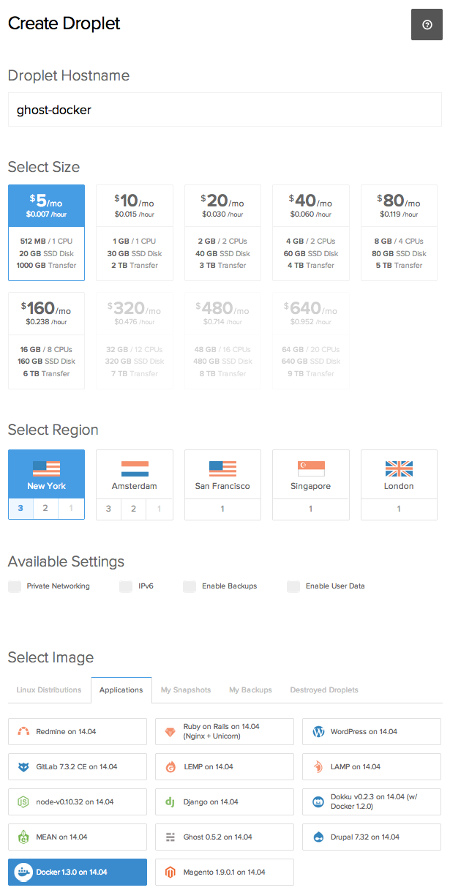

(OK, maybe 10 minutes if you need to set up a DigitalOcean account first)
Those nice folks at Digital Ocean (referral link) can provide SSD backed virtual servers quickly and at low cost ($5 per month for the basic option), AND they can also provision them for you with apps already setup (including Ghost or Docker), all in around 60 seconds. Docker has been the cool new thing in devops/sysadmin circles for at least a year and I have chosen the beautiful Ghost blogging platform to author my ramblings so I figured that this trinity should be brought together.
First, create your 'droplet' by:
- Giving it a name
- Choosing the size ($5)
- Selecting the region you want
- Under Select Image, choose the Applications tab and then Docker
- Choose your SSH key if you want to use one
- Hit Create Droplet

Second, wait 60 seconds for provisioning then SSH into your server (from a terminal on your Mac, ssh root@<your-droplet-public-ip-address>).
Third, run the below commands in order...
N.B. Enter your own URL at line 18 (or you could enter the IP address of the server instead).
... And you have a working Ghost blog on the interwebs. Visit http://<your-droplet-public-ip-address>/ghost/ to configure an admin user.
What's going on?
Lines 1–3 create directories we use later
Lines 5–39 provides a minimal Ghost config.js to run the blog in production mode and puts it in /var/ghost
Lines 41–61 sets up a basic Nginx server configuration
Lines 63 & 64 pull Docker images for Ghost and Nginx from from the Docker Hub
Line 65 starts a Docker container from the Ghost image, names it ghost and maps /var/ghost on our Droplet with /ghost-override in the container
Line 66 starts a Docker container from the Nginx image, calls it nginx and maps the other directories we created into the container. It also links the nginx container to the ghost container — this means that nginx gets environment variables with details about the ghost container, and also gets an entry in /etc/hosts. This latter fact allows us to specify the name ghost in line 57.
So what?
We could just as easily have installed Nginx on the Droplet in the first place (and installing Ghost would not have been too difficult, either, assuming we did not want to use the Ghost application image from Digital Ocean) so why do this?
Well, partly because we can but mainly for the incredible flexibility we get. Setting up a new Ghost blog for Aunt Mabel suddenly becomes much easier, for instance, as does trying out the next version with minimal concerns about affecting the current setup on the host server (we do need to be careful to map a different directory into the new container, /var/ghost_tryout perhaps). That applies to Ghost or any other software that we might be interested in spinning up and trying out without leaving any cruft behind when we're finished. And moving to another VPS provider is that bit easier, too.
Appendix
Server restarts Turns out that if the droplet reboots, Docker may not restart your containers. It's easy enough to docker start ghost nginx but better to do it automatically. We can tell Docker not to restart containers and get upstart to manage them instead: